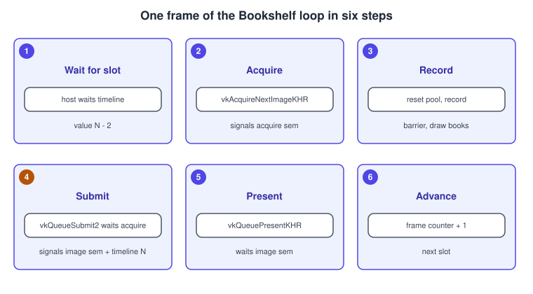
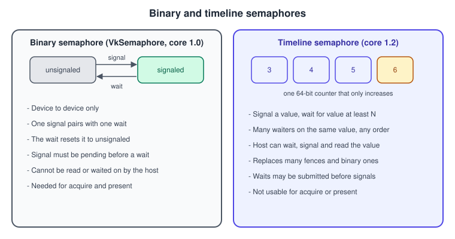
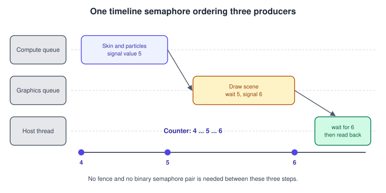
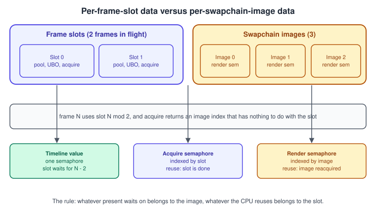

Timeline Semaphores and Frames in Flight
|
This content was generated with the assistance of AI and should be verified against the official documentation before being relied on in production. |
A Vulkan frame is a conversation between two processors that run at their own pace. The CPU records commands, the GPU executes them some milliseconds later, and the presentation engine shows the result some milliseconds after that. If the CPU waited for the GPU after every frame, both would sit idle half of the time. If it never waited, it would overwrite the uniform buffer the GPU is still reading. Synchronisation primitives are how an application states the exact amount of waiting that is needed and no more. This page covers the three queue-level primitives that do that work (semaphores, fences and timeline semaphores), the loop that keeps two or three frames in flight, and the one swapchain rule that trips almost every first renderer.
The facts were checked in November 2026. The version documented is Vulkan 1.4 with headers in the 1.4.3xx series and the LunarG SDK
1.4.363.0; the Bookshelf running example needs Vulkan 1.3 at minimum, which already guarantees timeline semaphores, because the
timelineSemaphore feature became optional core in Vulkan 1.2 (2020) and is required of every Vulkan 1.3 device. Everything here runs
on Windows, Linux, Android 10 or later with a Vulkan 1.3 driver, and on macOS through MoltenVK or KosmicKrisp (see
Vulkan on Apple: MoltenVK and KosmicKrisp).
This is part of step 3 of the Vulkan Bookshelf running example (C++20, Vulkan-Hpp RAII, VMA, GLFW or SDL3, Slang shaders): the triangle with dynamic rendering and synchronization2 needs a frame loop that survives resizing and shutdown, and the loop below is the one the later steps reuse. The barriers inside a frame are in Synchronization and sync2; the swapchain itself is in Window System Integration and the Swapchain; recording and submission are in Queues and Command Buffers. The game-side view of frame time is in Game Loop and Frame Timing, and the same problem in Metal is solved with a shared event, described in Synchronization and Barriers in Metal.
What you will see

The sections below explain each panel, starting with the primitives.
Fences, binary semaphores and timeline semaphores
Vulkan has several synchronisation primitives and each one answers a different question.
| Primitive | Who waits for whom | Signal and wait operations | Typical use |
|---|---|---|---|
Fence ( |
The host waits for the device. |
Signaled by a queue submission or by a swapchain operation; waited on with |
"Is this frame slot free again?" Also a way to know that a one-time upload has finished. |
Binary semaphore ( |
One queue operation waits for another, on the device only. |
A signal operation in a submission, a wait in a later one. Waiting unsignals it again. |
Swapchain acquire and present (the only place a binary semaphore is still mandatory), and code that must also run on Vulkan 1.0 or 1.1. |
Timeline semaphore ( |
Any mix of queues and the host, in any direction. |
Signal a 64-bit value, wait until the counter is at least a value; the host can wait, signal and read the value too. |
Frame pacing, cross-queue dependencies (compute to graphics, transfer to graphics), resource lifetime tracking. |
Event ( |
Work inside one queue, split barrier style, or the host. |
|
Rare. Covered with barriers in Synchronization and sync2. |

Binary semaphores in detail
A binary semaphore has two states, signaled and unsignaled. A queue submission can list it as a signal semaphore, which makes it signaled when the batch completes, and a later submission can list it as a wait semaphore, which blocks the batch until the semaphore is signaled and then returns it to unsignaled. The rules that cause most validation errors are:
-
every wait must have a signal operation that is already submitted (or being submitted) and that is not waited on by anything else;
-
one signal is consumed by exactly one wait, so a binary semaphore cannot fan out to two queues;
-
the host cannot signal, wait on or read a binary semaphore;
-
a binary semaphore cannot be re-signaled before its previous signal was waited on, which is the origin of the swapchain rule below.
Binary semaphores are created with a plain VkSemaphoreCreateInfo and no pNext chain. Their wait stage is part of the wait
operation: VkSemaphoreSubmitInfo::stageMask says which stages of the waiting batch must not start before the semaphore is signaled.
Fences in detail
A fence is the host-visible half of the story. vkQueueSubmit2 accepts one fence, which becomes signaled when every batch in that call
has finished executing. The host blocks with vkWaitForFences (arguments: the fences, a flag choosing "all" or "any", and a timeout in
nanoseconds) and must reset the fence with vkResetFences before reusing it. Creating a fence with VK_FENCE_CREATE_SIGNALED_BIT
lets the first frame of a loop wait without special-casing. A fence says nothing about presentation: the guide on semaphore reuse stresses
that waiting on the submit fence proves the command buffers are done, not that the present operation has finished with the image.
Timeline semaphores in detail
A timeline semaphore carries a 64-bit unsigned counter instead of a signaled flag. A signal operation sets the counter to a value; a wait operation waits until the counter is greater than or equal to a value. Because waiting does not consume anything, any number of queues and threads can wait for the same value, and the order in which submissions are made does not matter: a timeline wait may even be submitted before the submission that will signal it (wait-before-signal), which binary semaphores forbid.
The rules the specification imposes on the values are short:
-
the initial value is chosen at creation (
VkSemaphoreTypeCreateInfo::initialValue); -
each signal operation must use a value strictly greater than the current counter and greater than the value of every signal that is still pending, so values only grow;
-
a wait value may not be more than
maxTimelineSemaphoreValueDifferenceahead of the current counter or of any pending signal. The guaranteed minimum of this limit (reported inVkPhysicalDeviceTimelineSemaphoreProperties, and inVkPhysicalDeviceVulkan12Propertiessince 1.2) is 2 to the power 31 minus 1, which is millions of frames, so frame counters never hit it; -
a 64-bit counter that gains one per frame at 1000 frames per second lasts roughly 585 million years, so overflow is not a concern.

Timeline semaphores cannot be used for swapchain acquire and present: vkAcquireNextImageKHR signals and vkQueuePresentKHR waits on
binary semaphores. That limitation is why a Vulkan frame loop in 2026 still has binary semaphores in it, with a timeline semaphore
doing the CPU pacing around them.
Choosing a primitive
Creating a timeline semaphore
A timeline semaphore needs two things: the feature enabled at device creation and a VkSemaphoreTypeCreateInfo structure in the
pNext chain of the semaphore’s create info. The feature is timelineSemaphore in VkPhysicalDeviceVulkan12Features (or the older
VkPhysicalDeviceTimelineSemaphoreFeatures). The Bookshelf asks for Vulkan 1.3, so the query is a safety check, not a decision point.
#include <vulkan/vulkan_raii.hpp>
// Check the feature on the physical device (Vulkan 1.2 or newer).
bool supportsTimeline(const vk::raii::PhysicalDevice& physical) {
auto chain = physical.getFeatures2<vk::PhysicalDeviceFeatures2,
vk::PhysicalDeviceVulkan12Features>();
return chain.get<vk::PhysicalDeviceVulkan12Features>().timelineSemaphore == VK_TRUE;
}
// Enable it with the other 1.3 features when creating the device.
vk::raii::Device makeDevice(const vk::raii::PhysicalDevice& physical,
uint32_t queueFamily) {
float priority = 1.0f;
vk::DeviceQueueCreateInfo queueInfo{{}, queueFamily, 1, &priority};
vk::StructureChain<vk::DeviceCreateInfo,
vk::PhysicalDeviceVulkan13Features,
vk::PhysicalDeviceVulkan12Features> chain{
vk::DeviceCreateInfo{}.setQueueCreateInfos(queueInfo),
vk::PhysicalDeviceVulkan13Features{}
.setSynchronization2(VK_TRUE)
.setDynamicRendering(VK_TRUE),
vk::PhysicalDeviceVulkan12Features{}
.setTimelineSemaphore(VK_TRUE)};
const char* extensions[] = {VK_KHR_SWAPCHAIN_EXTENSION_NAME};
chain.get<vk::DeviceCreateInfo>().setPEnabledExtensionNames(extensions);
return vk::raii::Device(physical, chain.get<vk::DeviceCreateInfo>());
}
// A timeline semaphore starts at the value you choose, usually 0.
vk::raii::Semaphore makeTimeline(const vk::raii::Device& device, uint64_t initial = 0) {
vk::StructureChain<vk::SemaphoreCreateInfo, vk::SemaphoreTypeCreateInfo> chain{
vk::SemaphoreCreateInfo{},
vk::SemaphoreTypeCreateInfo{vk::SemaphoreType::eTimeline, initial}};
return vk::raii::Semaphore(device, chain.get<vk::SemaphoreCreateInfo>());
}
// A binary semaphore is a plain create info (swapchain acquire and present need these).
vk::raii::Semaphore makeBinary(const vk::raii::Device& device) {
return vk::raii::Semaphore(device, vk::SemaphoreCreateInfo{});
}Source: Vulkan specification: Semaphores
Signal, wait and query from the host
The host can drive a timeline semaphore with three calls. vkWaitSemaphores takes an array of semaphores and values and, by default,
waits until all of them reach their value; setting VK_SEMAPHORE_WAIT_ANY_BIT returns when any one does. vkSignalSemaphore sets the
counter from the host, which is how a loader thread can release a render thread. vkGetSemaphoreCounterValue reads the counter without
blocking, which makes cheap "has this upload finished?" polling possible.
// Block until the counter reaches `value` (nanoseconds; UINT64_MAX waits forever).
bool waitTimeline(const vk::raii::Device& device, const vk::raii::Semaphore& timeline,
uint64_t value, uint64_t timeoutNs = UINT64_MAX) {
vk::Semaphore handle = *timeline;
vk::SemaphoreWaitInfo info{};
info.setSemaphores(handle).setValues(value);
return device.waitSemaphores(info, timeoutNs) == vk::Result::eSuccess;
}
// Signal from the host, for example "the texture data has arrived".
void signalTimeline(const vk::raii::Device& device, const vk::raii::Semaphore& timeline,
uint64_t value) {
device.signalSemaphore(vk::SemaphoreSignalInfo{*timeline, value});
}
// Non-blocking poll.
bool isDone(const vk::raii::Semaphore& timeline, uint64_t value) {
return timeline.getCounterValue() >= value;
}Waiting in a queue submission
A queue submission waits on and signals timeline values through VkSemaphoreSubmitInfo, part of vkQueueSubmit2 (core 1.3, see
Synchronization and sync2). Each entry has a semaphore, a value, a stage mask
and a device index. For a binary semaphore the value is ignored; for a timeline semaphore it is the value to wait for or to signal. The
legacy path, vkQueueSubmit with a VkTimelineSemaphoreSubmitInfo structure that carries parallel arrays of values, still works and is
what a Vulkan 1.2 codebase uses, but the sync2 form keeps the semaphore, the value and the stage together, which removes a whole class of
"the arrays are not the same length" bugs.
| Field | Meaning | Notes |
|---|---|---|
|
The semaphore to wait on or signal. |
Binary or timeline. |
|
Timeline value to wait for (at least) or to signal (exactly). |
Ignored for binary semaphores; pass 0. |
|
|
Use the narrowest stage that is really blocked. |
|
Which physical device of a device group. |
0 on single-GPU systems. |
Frames in flight
A frame in flight is a frame whose commands the CPU has recorded and submitted but the GPU has not finished. Allowing two or three of them is what makes the CPU and the GPU overlap. With one frame in flight, the CPU records frame N, the GPU executes it while the CPU waits, and only then does the CPU record the next frame. With two, the CPU records the next frame while the GPU executes N.
The number of frames in flight is a choice, not a swapchain property. Two is the usual value; three raises throughput when frame times vary, at the price of more latency and more memory. With \( K \) frames in flight and a frame time of \( t \), the worst-case delay between recording a frame and the GPU finishing it is about \( K \times t \), which is why input-latency-sensitive games stay at two. The swapchain image count is a separate number, normally the minimum the surface allows plus one, and it is independent of \( K \).
What belongs to a frame slot and what belongs to a swapchain image
The most useful design rule in a Vulkan renderer is to split every piece of state into one of two groups.

| Indexed by the frame slot (frame number modulo K) | Indexed by the swapchain image (returned by acquire) |
|---|---|
Command pool and command buffers (reset when the slot is reused) |
The render-finished binary semaphore that |
Uniform buffer region or ring slice, per-frame descriptor sets or descriptor pool, per-frame upload staging memory |
The image view and, when dynamic rendering is not used, the framebuffer |
The acquire binary semaphore (signaled by |
Any per-image cache that follows the image, such as a swapchain-sized depth or resolve target if it was created per image |
Everything in the left column is protected by the same condition: the timeline semaphore has reached the value that the slot’s previous frame signaled. Everything in the right column follows the image, because the presentation engine owns the image, and the semaphores waited on by present, until the image is acquired again.
The swapchain semaphore-reuse rule
vkQueuePresentKHR waits on binary semaphores but cannot signal anything: there is no fence and no semaphore that tells the
application the presentation engine has finished with the wait semaphore. A renderer that creates one render-finished semaphore per
frame slot, reuses it on the next lap and waits on its submit fence is therefore wrong, even though it ran without complaint for years:
the fence proves the command buffers completed, not that the present operation consumed the semaphore. Since SDK 1.4.313 the Khronos
validation layer reports this as VUID-vkQueueSubmit-pSignalSemaphores-00067, which is why renderers that were clean in 2023 start
printing errors on a current SDK.
The fix that works on every Vulkan version and needs no extension is the one the Vulkan Guide recommends: allocate the semaphores that
present waits on per swapchain image, not per frame in flight. When vkAcquireNextImageKHR returns an image index and its semaphore
or fence is later waited on, the previous present of that image is known to be over, so that image’s render-finished semaphore is free
again. The acquire semaphore, in contrast, stays per frame slot. This is exactly the split in the table above.
The extension VK_EXT_swapchain_maintenance1 (described in the guide) goes further. It lets a present operation take a fence
(VkSwapchainPresentFenceInfoEXT) that the application can wait on, in the same way a submit takes a fence. It also fixes shutdown:
vkDeviceWaitIdle and vkQueueWaitIdle are defined in terms of fences, an unextended present has none, so they cannot prove the
swapchain’s resources and semaphores are idle. Check the extension in vulkaninfo before relying on it; the per-image rule works
everywhere.
One frame, in code
The following class is the frame loop of the Bookshelf renderer, written against Vulkan-Hpp RAII with dynamic rendering and synchronization2 (the recording itself is left to a callback). The timeline value of frame \( f \) (counting from 0) is \( f + 1 \): frame \( f \) signals \( f + 1 \) on submit, and a slot is free for frame \( f \) once the counter has reached \( f + 1 - K \).
#include <vulkan/vulkan_raii.hpp>
#include <functional>
#include <vector>
class FrameLoop {
public:
static constexpr uint32_t kFramesInFlight = 2;
using RecordFn = std::function<void(vk::raii::CommandBuffer&, uint32_t imageIndex)>;
FrameLoop(const vk::raii::Device& device, vk::raii::Queue& queue, uint32_t queueFamily,
vk::raii::SwapchainKHR& swapchain, uint32_t imageCount)
: device_(device), queue_(queue), swapchain_(swapchain),
timeline_(makeTimeline(device, 0)) {
for (uint32_t i = 0; i < kFramesInFlight; ++i) {
Slot slot{
vk::raii::CommandPool(device, {vk::CommandPoolCreateFlagBits::eTransient,
queueFamily}),
nullptr,
vk::raii::Semaphore(device, vk::SemaphoreCreateInfo{})};
vk::CommandBufferAllocateInfo alloc{*slot.pool, vk::CommandBufferLevel::ePrimary, 1};
slot.cmd = std::move(vk::raii::CommandBuffers(device, alloc).front());
slots_.push_back(std::move(slot));
}
createImageSemaphores(imageCount);
}
// Call after the swapchain was recreated.
void createImageSemaphores(uint32_t imageCount) {
imageDone_.clear();
for (uint32_t i = 0; i < imageCount; ++i)
imageDone_.emplace_back(device_, vk::SemaphoreCreateInfo{});
}
// Returns false when the swapchain is out of date and must be recreated.
bool drawFrame(const RecordFn& record) {
Slot& slot = slots_[frame_ % kFramesInFlight];
// 1. Wait until this slot's previous frame has finished on the GPU.
if (frame_ + 1 > kFramesInFlight)
waitTimeline(device_, timeline_, frame_ + 1 - kFramesInFlight);
// 2. Acquire. The semaphore is per frame slot; the image index is not.
uint32_t imageIndex = 0;
try {
auto [result, index] = swapchain_.acquireNextImage(UINT64_MAX, *slot.acquired);
imageIndex = index; // eSuboptimalKHR is still usable; recreate after presenting
} catch (const vk::OutOfDateKHRError&) {
return false; // nothing was signaled, the slot stays reusable
}
// 3. Record. The pool can be reset because step 1 proved the GPU is done with it.
slot.pool.reset();
slot.cmd.begin({vk::CommandBufferUsageFlagBits::eOneTimeSubmit});
record(slot.cmd, imageIndex);
slot.cmd.end();
// 4. Submit: wait for the image, signal the image's semaphore and the timeline.
vk::SemaphoreSubmitInfo wait{*slot.acquired, 0,
vk::PipelineStageFlagBits2::eColorAttachmentOutput};
vk::SemaphoreSubmitInfo signals[] = {
{*imageDone_[imageIndex], 0, vk::PipelineStageFlagBits2::eAllCommands},
{*timeline_, frame_ + 1, vk::PipelineStageFlagBits2::eAllCommands}};
vk::CommandBufferSubmitInfo cmdInfo{*slot.cmd};
vk::SubmitInfo2 submit{};
submit.setWaitSemaphoreInfos(wait)
.setCommandBufferInfos(cmdInfo)
.setSignalSemaphoreInfos(signals);
queue_.submit2(submit);
// 5. Present, waiting on the semaphore that belongs to the image.
vk::Semaphore presentWait = *imageDone_[imageIndex];
vk::SwapchainKHR swapchain = *swapchain_;
vk::PresentInfoKHR present{};
present.setWaitSemaphores(presentWait)
.setSwapchains(swapchain)
.setImageIndices(imageIndex);
bool ok = true;
try {
ok = queue_.presentKHR(present) == vk::Result::eSuccess; // eSuboptimalKHR -> false
} catch (const vk::OutOfDateKHRError&) {
ok = false;
}
// 6. Advance.
++frame_;
return ok;
}
void waitIdle() { device_.waitIdle(); }
private:
struct Slot {
vk::raii::CommandPool pool;
vk::raii::CommandBuffer cmd;
vk::raii::Semaphore acquired;
};
const vk::raii::Device& device_;
vk::raii::Queue& queue_;
vk::raii::SwapchainKHR& swapchain_;
vk::raii::Semaphore timeline_;
std::vector<Slot> slots_;
std::vector<vk::raii::Semaphore> imageDone_;
uint64_t frame_ = 0;
};Points worth reading twice in that code:
-
The wait for the timeline is the only place the CPU blocks in steady state. It runs before the acquire, so the CPU never records into a pool the GPU is still reading.
-
slot.pool.reset()recycles all command buffers of the slot in one call, which is cheaper than resetting each buffer, and theeTransientflag tells the driver the buffers are short lived. -
An out-of-date failure from acquire returns before anything was signaled or submitted, so the frame counter does not advance and no semaphore is left in a half-used state. A failure from present happens after the submit, so the counter does advance: the work did run, and the next call recreates the swapchain.
-
The timeline signal and the binary signal are in the same batch, so one submission feeds both the CPU pacing and the presentation.
Resizing and recreating the swapchain
When the window resizes, or acquire or present reports VK_ERROR_OUT_OF_DATE_KHR, the swapchain is rebuilt. The simplest correct
sequence is to wait for the device to be idle, destroy the old image views, create the new swapchain passing the old one as
oldSwapchain, rebuild the views and render targets that depend on the extent, and call createImageSemaphores again because the
image count can change. Using oldSwapchain lets the driver recycle resources; the old handle is destroyed after the new one is
created. The surface-capability details, minimised windows with a zero extent and pre-rotation are in
Window System Integration and the Swapchain.
void Renderer::recreateSwapchain() {
// A minimised window has a zero-sized framebuffer: wait for events instead of spinning.
int w = 0, h = 0;
glfwGetFramebufferSize(window_, &w, &h);
while (w == 0 || h == 0) {
glfwWaitEvents();
glfwGetFramebufferSize(window_, &w, &h);
}
device_.waitIdle(); // every frame slot and every present is finished
imageViews_.clear();
swapchain_ = createSwapchain(w, h, std::move(swapchain_)); // passes oldSwapchain
imageViews_ = createImageViews(swapchain_);
depth_ = createDepthTarget(w, h);
frames_.createImageSemaphores(static_cast<uint32_t>(imageViews_.size()));
}One timeline semaphore for several queues
The frame loop uses the timeline from the host side only. The same semaphore can order GPU work across queues without the host being involved. In the Bookshelf, the dust-particle step adds a compute pass. The compute submission simulates the particles into a storage buffer, and the graphics submission draws them as instanced quads. Both signal one timeline: for frame \( f \) the compute work signals \( 2f + 1 \) and the graphics work signals \( 2f + 2 \), and the graphics batch waits for \( 2f + 1 \) before its vertex-input stage reads the particle buffer.
void submitFrame(vk::raii::Queue& computeQueue, vk::raii::Queue& graphicsQueue,
const vk::raii::Semaphore& timeline, const vk::raii::Semaphore& acquired,
const vk::raii::Semaphore& imageDone,
vk::CommandBuffer computeCmd, vk::CommandBuffer graphicsCmd,
uint64_t frame) {
const uint64_t particlesDone = 2 * frame + 1;
const uint64_t frameDone = 2 * frame + 2;
// Compute: no waits (the previous frame is ordered by the slot wait on the host).
vk::SemaphoreSubmitInfo computeSignal{*timeline, particlesDone,
vk::PipelineStageFlagBits2::eComputeShader};
vk::CommandBufferSubmitInfo computeCmdInfo{computeCmd};
vk::SubmitInfo2 computeSubmit{};
computeSubmit.setCommandBufferInfos(computeCmdInfo).setSignalSemaphoreInfos(computeSignal);
computeQueue.submit2(computeSubmit);
// Graphics: wait for the swapchain image and for the particles, signal both outputs.
vk::SemaphoreSubmitInfo waits[] = {
{*acquired, 0, vk::PipelineStageFlagBits2::eColorAttachmentOutput},
{*timeline, particlesDone, vk::PipelineStageFlagBits2::eVertexInput}};
vk::SemaphoreSubmitInfo signals[] = {
{*imageDone, 0, vk::PipelineStageFlagBits2::eAllCommands},
{*timeline, frameDone, vk::PipelineStageFlagBits2::eAllCommands}};
vk::CommandBufferSubmitInfo graphicsCmdInfo{graphicsCmd};
vk::SubmitInfo2 graphicsSubmit{};
graphicsSubmit.setWaitSemaphoreInfos(waits)
.setCommandBufferInfos(graphicsCmdInfo)
.setSignalSemaphoreInfos(signals);
graphicsQueue.submit2(graphicsSubmit);
}Three details matter here. First, the slot-free condition in the frame loop becomes "the counter has reached \( 2(f - K) + 2 \)", the value the graphics batch of frame \( f - K \) signaled. Second, a semaphore wait gives an execution dependency and makes memory available, but the buffer’s queue-family ownership (when the compute and graphics queues come from different families and the buffer was created exclusive) still needs a release and acquire barrier pair, covered in Synchronization and sync2. Third, because timeline waits can be submitted before their signals, the submission order of the compute and graphics batches is free: the graphics batch could be submitted first.
Frame pacing and presentation
A frame loop that is correct about synchronisation can still look uneven. Frame pacing is the discipline of presenting at regular intervals, and the main levers in Vulkan are these.
-
Present mode.
FIFO(always available) blocksvkQueuePresentKHRor the acquire when the queue of images is full, which is effective vertical synchronisation and the simplest pacing.MAILBOXreplaces the queued image and gives low latency without tearing where supported;IMMEDIATEtears. Details, with timing diagrams, are in Window System Integration and the Swapchain. -
Frames in flight against swapchain images. With FIFO, \( K = 2 \) and three images, the acquire normally returns immediately. If the image count is the minimum, acquire blocks on the display instead of on the fence, which shifts the waiting point but keeps the rate.
-
Present id and present wait. The
VK_KHR_present_idandVK_KHR_present_waitextensions let the application tag presents with an identifier and wait until a given present has reached the display, which is the building block for limiting latency to a chosen number of presented frames rather than a number of submitted ones. Query support before use; mobile and some desktop drivers still lack it. -
Platform helpers. Android has the Swappy frame pacing library, described in Vulkan on Android. On desktop, the game-side fixed or variable time step is in Game Loop and Frame Timing.
Fence-based loop for older devices
A renderer that must also run on a Vulkan 1.0 or 1.1 device, for example an older Android phone, cannot rely on timeline semaphores. The same structure works with a fence per frame slot: the fence replaces the timeline wait, and everything else, including the per-image present semaphore, stays as above.
struct LegacySlot {
vk::raii::CommandPool pool;
vk::raii::CommandBuffer cmd;
vk::raii::Semaphore acquired;
vk::raii::Fence inFlight; // created signaled so frame 0 does not wait forever
};
LegacySlot makeLegacySlot(const vk::raii::Device& device, uint32_t family) {
LegacySlot s{
vk::raii::CommandPool(device, {vk::CommandPoolCreateFlagBits::eTransient, family}),
nullptr,
vk::raii::Semaphore(device, vk::SemaphoreCreateInfo{}),
vk::raii::Fence(device, vk::FenceCreateInfo{vk::FenceCreateFlagBits::eSignaled})};
vk::CommandBufferAllocateInfo alloc{*s.pool, vk::CommandBufferLevel::ePrimary, 1};
s.cmd = std::move(vk::raii::CommandBuffers(device, alloc).front());
return s;
}
// At the top of the frame:
// (void)device.waitForFences(*slot.inFlight, VK_TRUE, UINT64_MAX);
// device.resetFences(*slot.inFlight);
// And the submit passes the fence as the second argument:
// queue.submit2(submit, *slot.inFlight);Reset the fence only after the acquire has succeeded if the loop can return early on an out-of-date swapchain; resetting before an early return leaves an unsignaled fence that no submission will ever signal and the next frame deadlocks. The Bookshelf prefers the timeline version because a single counter cannot get into that state: nothing is reset.
Shutdown and device loss
Before destroying anything, the application must make sure the GPU is done. With the timeline loop the idiom is a wait for the last
submitted value; vkDeviceWaitIdle also works, and is what most code uses. Destroy objects in the reverse order of creation, which
Vulkan-Hpp RAII does automatically when members are declared in dependency order. On shutdown the present operation is the awkward
part, as described above: unless VK_EXT_swapchain_maintenance1 is in use, no wait proves that the presentation engine has released
the render-finished semaphores, and the validation layer is tolerant of the usual vkDeviceWaitIdle pattern only when the extension is
off. If a wait returns VK_ERROR_DEVICE_LOST the GPU hung or the driver reset: log the last timeline value read with
vkGetSemaphoreCounterValue, because it names the last frame that finished and narrows the search for the crash (see
Debugging and Capture Tools).
Common mistakes
-
One render-finished semaphore per frame slot. The reuse bug described above; fix by indexing it with the image index.
-
Waiting on the timeline after recording instead of before. The pool is reset or the uniform buffer written while the GPU still reads it; the symptom is flicker or validation errors about a command buffer in the pending state.
-
Using a timeline semaphore for the swapchain.
vkAcquireNextImageKHRandvkQueuePresentKHRtake binary semaphores only. -
Non-increasing values. Signaling 5 when a pending signal is already 6 is a validation error and can hang. Derive values from a monotonically increasing counter, never from the slot index.
-
Wrong wait stage for the acquire semaphore. Waiting at
TOP_OF_PIPE(orALL_COMMANDSwith no need) serialises vertex work behind the acquire. Wait atCOLOR_ATTACHMENT_OUTPUT, the stage where the image is first written, and make the layout transition’s first scope match it. -
Resetting a fence and then returning early. Described in the fence section; the loop deadlocks.
-
Creating and destroying semaphores every frame. They are cheap but not free and fragment driver memory. Create them once.
-
Timeline waits with huge value differences. Never wait for a value more than
maxTimelineSemaphoreValueDifferenceahead; a bug that jumps the counter by 2 to the power 32 hits the limit.
Performance notes
-
The single steady-state CPU wait should return immediately. If a profiler shows it blocking every frame, the GPU is the bottleneck (optimise the GPU, not the loop), or the frame count is too low for the variance in frame times.
-
Prefer one timeline wait per frame over many fences. Waiting for several semaphores in one
vkWaitSemaphorescall costs one system call. -
A
vkQueueSubmit2call is relatively expensive on the CPU. Batch the command buffers of a frame into one submission when no semaphore sits between them; use several batches in one call rather than several calls. -
On tile-based GPUs, over-wide wait stages and early signals can break the overlap of vertex and fragment work across frames. Keep the stage masks honest, and see Multithreading and Performance.
-
More frames in flight cost memory (one set of per-slot buffers each) and latency, not extra throughput once the GPU is saturated.
What changed, with dates
| When | Change | Consequence |
|---|---|---|
February 2016 |
Vulkan 1.0: fences and binary semaphores, |
The model the 2016 books teach. |
2019 to January 2020 |
|
Timeline semaphores are available without an extension on 1.2 devices. |
January 2022 |
Vulkan 1.3: synchronization2 core ( |
The Bookshelf’s minimum; no capability check needed on a 1.3 device. |
December 2024 |
Vulkan 1.4 raises the baseline further and keeps the same model. |
Nothing in the loop changes. |
SDK 1.4.313 |
Validation reports unsafe reuse of present wait semaphores ( |
Code written to the one-semaphore-per-frame tutorials of the era must move to per-image semaphores. |
Extension |
|
Optional; the per-image rule needs no extension. |
Where the 2016 books are outdated
Both books were written against Vulkan 1.0 and predate timeline semaphores, synchronization2 and the swapchain reuse rule.
| Book and chapter | What it teaches | Today |
|---|---|---|
VPG chapter 11, VCB chapter 3 |
Fences for host waits and binary semaphores for queue waits are the only choices; submission with |
Timeline semaphores (core 1.2) cover both host and queue waits with one object; submit with |
VPG chapter 11, VCB chapter 3 |
Semaphore wait stages given as |
|
VPG chapter 11, VCB chapter 3 |
Events ( |
|
VPG chapter 5, VCB chapter 2 |
One acquire semaphore and one render-finished semaphore per frame, often reused each lap. |
Per-frame acquire semaphores, per-swapchain-image present semaphores (Vulkan Guide), optionally present fences with |
Both |
|
Frames in flight with a timeline wait, or the loop serialises the CPU and GPU. |
See it in
-
Game Loop and Frame Timing for the general problem of pacing a frame.
-
Explicit vs Implicit APIs for why OpenGL hid this and Vulkan does not.
-
Synchronization and Barriers in Metal for the Metal shared event.
-
Memory Heaps, Types and VMA, which uses the same timeline to free staging buffers.
-
Bookshelf, Part 1: Triangle to Textured Book, where this loop runs.
References
-
Vulkan Guide, Swapchain Semaphore Reuse: https://docs.vulkan.org/guide/latest/swapchain_semaphore_reuse.html
-
Vulkan Guide, Synchronization Examples: https://docs.vulkan.org/guide/latest/synchronization_examples.html
-
Vulkan Guide, VK_KHR_synchronization2: https://docs.vulkan.org/guide/latest/extensions/VK_KHR_synchronization2.html
-
Vulkan specification, Synchronization and Cache Control: https://docs.vulkan.org/spec/latest/chapters/synchronization.html
-
Vulkan reference page, vkWaitSemaphores: https://registry.khronos.org/vulkan/specs/latest/man/html/vkWaitSemaphores.html
-
Vulkan specification, versions appendix: https://docs.vulkan.org/spec/latest/appendices/versions.html
-
Vulkan Tutorial, Swap chain recreation: https://docs.vulkan.org/tutorial/latest/03_Drawing_a_triangle/04_Swap_chain_recreation.html
-
Vulkan-Hpp: https://github.com/KhronosGroup/Vulkan-Hpp
-
Vulkan Programming Guide (InformIT): https://www.informit.com/store/vulkan-programming-guide-the-official-guide-to-learning-9780134464541
-
Vulkan Cookbook (Packt): https://www.packtpub.com/en-us/product/vulkan-cookbook-9781786468154